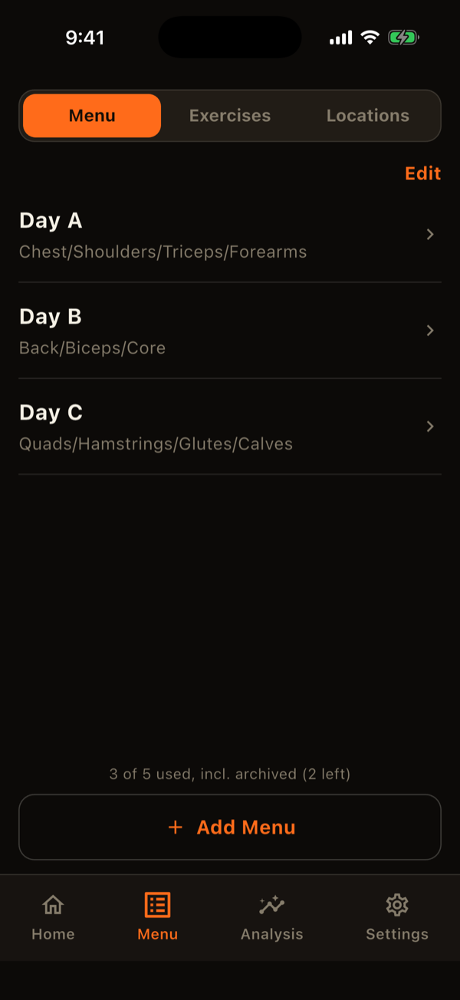
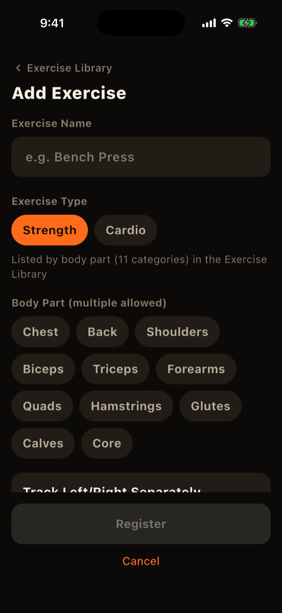
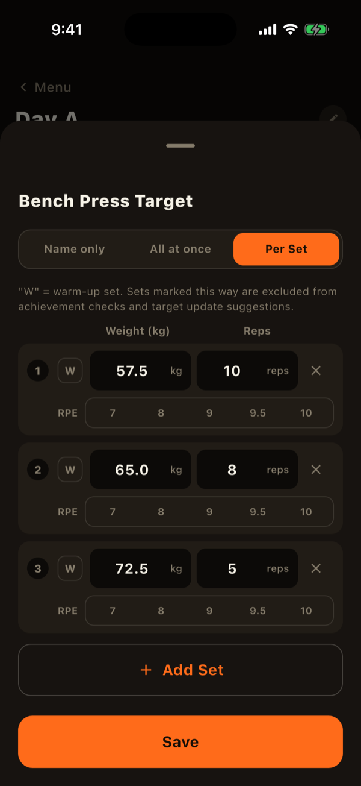

The Menu tab in LiFTY has three management screens: menus, exercises, and locations. How you combine them decides how your logs are separated.
How the three fit together
- Exercises are the things you log, such as bench press. You can tie them to a location and machine.
- Menus (Day A, Day B, ...) bundle the exercises and targets for a given day.
- Locations are places you train, such as home or Gym A.
Menus are not tied to a location. When you start a workout and pick a location, the menus offered are filtered by the locations of the exercises each menu uses.

Registering an exercise
Add exercises under "Exercises" in the Menu tab. As you type a name, common exercises are suggested; tapping one fills in the name and body part.
- Type: "Strength" or "Cardio." Cardio records time, distance, calories, and average heart rate, and you can add your own fields with a name and unit.
- Body part: choose from 11 groups: chest, back, shoulders, biceps, triceps, forearms, quadriceps, hamstrings, glutes, calves, and core. Chest, back, shoulders, biceps, triceps, and core also have optional sub-groups (such as lats or long head), and you can choose several.
- Track left and right separately: when on, this exercise's sets are logged per side.
- Unit and weight step: choose kg or lbs per exercise, and the step used by the +/- buttons.
- Location and machine/equipment: both optional. Details such as seat height or angle can be saved as "machine settings," any number of name/value pairs.
- Note: handy for telling apart exercises with the same name.

Keeping logs separate per gym or machine
The same exercise can feel different at a different gym or on a different machine. In LiFTY, you register such exercises separately per location. For example, register "Leg Press (Gym A)" and "Leg Press (Gym B)" as two exercises, and each keeps its own previous log, personal bests, and charts.
To create one from an existing exercise, use the copy icon at the top right of the exercise detail (progress) screen. It copies everything and lets you change only the location.
Registering a location
Add locations under "Locations" in the Menu tab. The free plan allows up to 2; more requires the paid plan. A location that is used by an active exercise cannot be archived until you remove that location from the exercise or archive the exercise.
Building a menu
Add a menu under "Menus" in the Menu tab, pick exercises, and set targets. Each exercise can use one of three levels of detail:
- Name only: list the exercise with no target.
- All at once: one target for sets, reps, and weight, shared by every set.
- Per set: set weight and reps set by set, which suits pyramids and ramp-ups. You can mark rows as warm-up ("W") and assign a side.
Strength exercises can also have an optional target RPE. The target editor shows the menu's sets per body part (warm-ups are not counted). Drag to reorder exercises.
The free plan allows up to 5 menus, archived ones included. A menu that has never been used in a workout can be deleted permanently and no longer counts.

Archiving and deleting
The "x" buttons on menus, exercises, and locations appear when you turn on "Edit" in the list. Tapping one archives the item; past logs and charts stay intact. You can restore or permanently delete archived items under Settings > Data > Archive. Permanent deletion is possible only for items with no logs.
LiFTY is a workout log you can start using right away, with no account required.
Download on the App Store